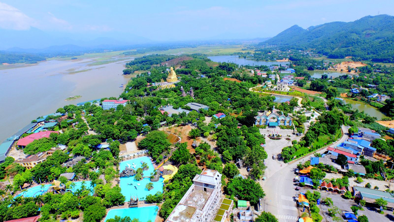

Những năm gần đây, số lượng khách du lịch trong và ngoài nước đến với Thái Nguyên đã không ngừng tăng lên.
Chỉ tính riêng 6 tháng đầu năm 2015, tổng số khách du lịch đến với Thái Nguyên vào khoảng 888.360 lượt, trong đó số lượng khách quốc tế đạt 23.480 lượt, doanh thu với các doanh nghiệp du lịch ước đạt 27,8 tỷ đồng, tổng doanh thu của xã hội từ du lịch đạt sấp sỉ 555,9 tỷ đồng.
Thái Nguyên là một tỉnh trung du Bắc bộ, với diện tích tự nhiên 3.562,82 km2, tỉnh Thái Nguyên là trung tâm chính trị, kinh tế của khu vực Việt Bắc nói riêng và vùng trung du miền núi Đông bắc nói chung. Tỉnh Thái Nguyên cũng là cửa ngõ giao lưu kinh tế, văn hóa - xã hội giữa vùng trung du miền núi với vùng đồng bằng Bắc bộ. Không chỉ vậy thiên nhiên đã hào phóng ban tặng cho Thái Nguyên vô số những thắng cảnh đẹp, hùng vĩ với nhiều địa danh du lịch nổi tiếng, hấp dẫn như: Suối Mỏ Gà, hang Phượng Hoàng, hồ Núi Cốc, Bảo tàng Văn hóa các dân tộc Việt Nam, khu di tích lịch sử ATK Định Hóa… Mặc dù hiện nay số lượng khách du lịch đến với Thái Nguyên chưa thực sự cao. Song, với những nỗ lực của tập thể cán bộ, nhân viên Ngành Văn hóa, Thể thao và Du lịch (VHTT&DL), sự quan tâm, chỉ đạo sát sao từ Tỉnh ủy, UBND, Bộ VHTT&DL, sự đồng tình ủng hộ của các đơn vị, doanh nghiệp du lịch và toàn dân, đã góp phần phát triển ngành du lịch Thái Nguyên với nhiều sắc màu tươi sáng.
Theo số liệu tổng hợp của Sở Văn hoá, Thể thao và Du lịch tỉnh Thái Nguyên: Trong năm 2019, khách do cơ sở lưu trú du lịch phục vụ đạt hơn 1 triệu lượt; khách du lịch đến các điểm tham quan đạt hơn 1,8 triệu lượt; doanh nghiệp lữ hành phục vụ đạt hơn 150.000 lượt; doanh thu tại các doanh nghiệp du lịch đạt trên 430 tỷ đồng. So với cùng kỳ năm trước, lượng khách tăng hơn gần 500.000 lượt, doanh thu từ các doanh nghiệp tăng hơn gần 30 tỷ đồng. Trên địa bàn tỉnh có 435 cơ sở lưu trú du lịch, trong đó có 01 khách sạn đạt tiêu chuẩn 5 sao đang được xây dựng của tập đoàn APEC, 50 khách sạn đạt từ 1 đến 4 sao, 386 cơ sở đạt tiêu chuẩn kinh doanh nhà nghỉ, nhà ở có phòng cho khách du lịch thuê.
Thái Nguyên từng là nơi tổ chức Năm Du lịch Quốc gia 2007 hướng về cội nguồn chiến khu Việt Bắc thu hút hàng triệu khách du lịch đến thăm trong đó có nhiều khách nước ngoài.. Với lợi thế là trung tâm vùng, hạ tầng cơ sở phát triển, với hơn 800 điểm đến là các di tích lịch sử, di tích danh thắng, di tích khảo cổ học, di tích kiến trúc nghệ thuật, di tích tín ngưỡng đã được kiểm kê, bảo vệ theo quy định của Luật Di sản văn hoá và 80 lễ hội được tổ chức vào dịp đầu xuân… Trên địa bàn tỉnh, một trong những điểm đến được nhiều du khách quan tâm như:
+ Khu du lịch Hồ Núi Cốc, cách thành phố Thái Nguyên 20 km về phía tây (giáp dãy núi Tam Đảo) là khu du lịch lớn nhất của tỉnh. Mặt hồ rộng 25 km² và có đến 69 hòn đảo lớn nhỏ. Khu Du lịch Hồ Núi Cốc đón tiếp khoảng hơn 600.000 lượt du khách trong năm 2019.

+ Khu Di tích Quốc gia đặc biệt ATK Định Hoá. Nơi Chủ tịch Hồ Chí Minh đã sinh sống nhiều năm trong Kháng chiến chống Pháp (1945-1954), đón tiếp, phục vụ 2.680 đoàn khách với gần 557.000 lượt khách
+ Thác Nậm Rức(mưa rơi), nằm trong khu di tích lịch sử ATK.
+ Đát Đắng thuộc xã Phú Xuyên, huyện Đại Từ, tỉnh Thái Nguyên
+ Đồi chè Tân Cương – thiên đường xanh ngát ở Thái Nguyên
+ Chùa Hang - Kim Sơn Tự nằm ở trung tâm phường Chùa Hang, thành phố Thái Nguyên, tỉnh Thái Nguyên (nguyên trước đây là thị trấn Chùa Hang, huyện Đồng Hỷ).
+ An toàn khu Định Hóa (ATK Định Hóa) là một khu di tích rộng lớn nằm ở tỉnh Thái Nguyên. Khu di tích này đã được công nhận là di tích quốc gia đặc biệt quan trọng của Việt Nam. Đây là nơi Chủ tịch Hồ Chí Minh và các nhà lãnh đạo Đảng, Nhà nước Việt Nam đã sống và làm việc từ 20/5/1947 - 1954 để lãnh đạo cuộc kháng chiến 9 năm chống thực dân Pháp.